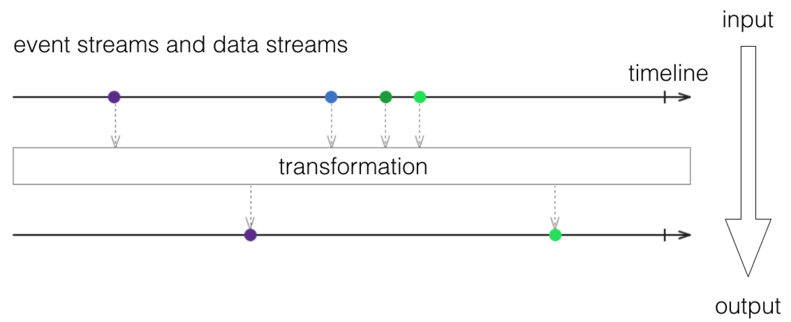
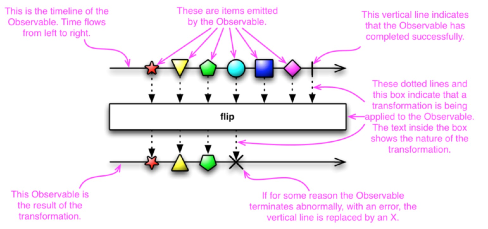
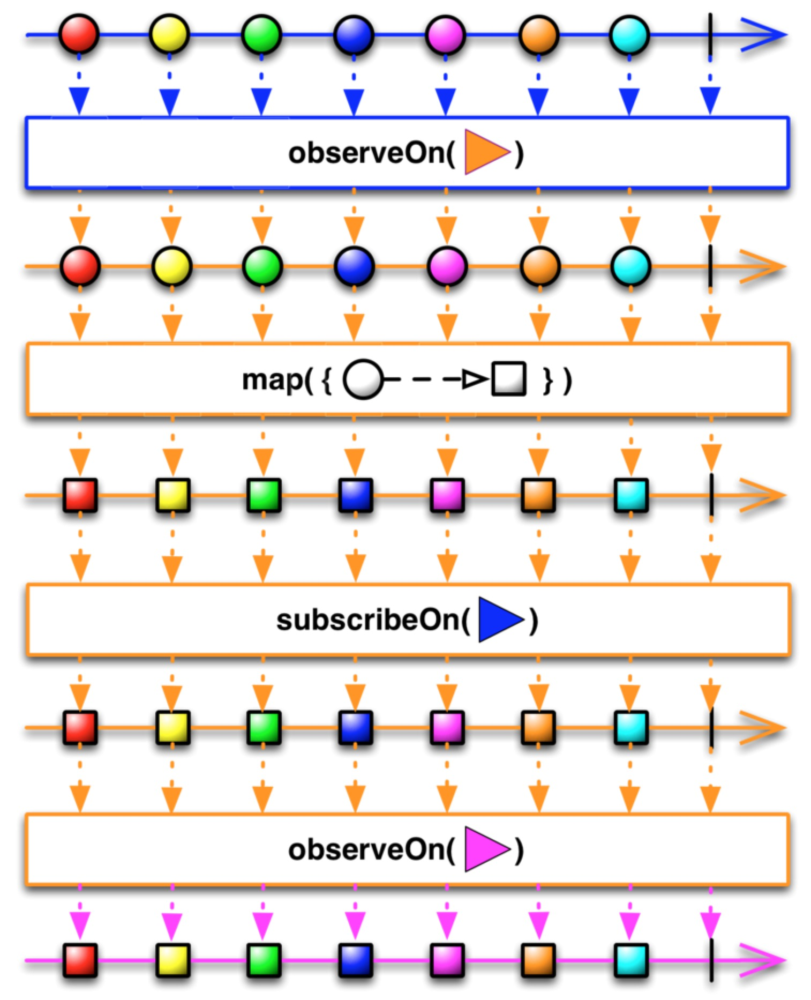

初识 RxJava & RxAndroid
最近开发公司一个内部app，接触到了RxJava和RxAndroid，在这里总结一下自己的理解。
Background
先来说说ReactiveX, ReactiveX结合了观察者模式和响应式编程的特性，核心思想就是把事件和数据看成一个流(event streams and data streams)，如下图，水平方向是时间轴，垂直方向是stream的变化，输入是stream，输出也是stream，这个过程中可以对stream进行任何的操作，比如网络的请求或者是数据的存储。 
在ReactiveX中有两个基本terms，Observables(被观察者/事件源)和Subscribers(观察者/订阅者)，Observables发出事件(emit item)，Subscribers消费事件(consume item)。一个Observable可以通过Subscriber.onNext()发出任何数量的items(包括0)通知订阅了它的每一个Subscriber，然后以完成(Subscriber.onComplete()) 或者错误(Subscriber.onError())来结束。这看起来和观察着模式一样，但注意到有一点不同是如果Observable没有被订阅，它不会发出items.
RxJava是Java VM对ReactiveX的实现。RxAndroid是基于RxJava对Android的支持。
Hello World
下面用最简单的例子解释如何使用RxJava
Observable<String> myObservable = Observable.create(
new Observable.OnSubscribe<String>() {
@Override
public void call(Subscriber<? super String> sub) {
sub.onNext("Hello, world!");
sub.onCompleted();
}
}
);
myObservable会发出一个"Hello, world!"然后完成，现在我们给myObservable创建一个subscriber来消费这个事件
myObservable.subscribe(new Subscriber<String>() {
@Override
public void onNext(String s) {
System.out.println("onNext: " + s);
}
@Override
public void onCompleted() {
System.out.println("onCompleted.");
}
@Override
public void onError(Throwable e) { }
)
当myObservable调用subscribe时，myObservable分别call subscriber的onNext()和onComplete().因此输出的结果是
onNext: Hello, world!
onCompleted.
Simpler Code
在创建Observable时有多种方法(wiki), 比如
Observable<String> myObservable = Observable.just("Hello world!");
对于subscriber，可能并不关心onComplete()和onError(), 所以我们可以这样写：
myObservable.subscribe(new Action1<String>() {
@Override
public void call(String s) {
System.out.println(s);
}
});
当然Observable也支持
myObservable.subscribe(onNextAction, onErrorAction, onCompleteAction);
Streams Transformation
在最开始提到过ReactiveX的思想是把event和data当成流来处理，上面的例子中"Hello World!"就是一个data stream. 我们要改变"Hello World!"这个string时，就是对data stream进行处理。最简单直接的是:
Observable<String> myObservable = Observable.just("Hello world!" + " append");
这种方法明显很死板，如果我想对myObservable有多个subscribers，subscribers只能拿到有相同append的string. 于是用下面这个方法
myObservable.subscribe(new Action1<String>() {
@Override
public void call(String s) {
System.out.println(s + " append");
}
});
这个可以解决上面的问题，但是我们希望在subscribe()中所作出的事情尽量简单(lightweight)，因为最终会回到主线程中运行，也就是subscriber只应该关注stream output并且去响应结果。接下来介绍ReactiveX中神奇的Operators.
Operators
现在用Operator map来解决上面的问题
Observable.just("Hello world!")
.map(new Func1<String, String>() {
@override
public String call(String s) {
return s + " append";
}
})
.subscribe(new Action1<String>() {
@Override
public void call(String s) {
System.out.println(s);
}
});
在map的方法中，我们将data stream改变，然后再传递到subscribe中，可以将just()看为起点，subscribe()为终点，这个传递的过程中我们可以对stream使用任何的Operators. 仔细理解下图。

下面例子中是多个Operators的使用, 其它Operators请参考doc.
Observable.just("Hello world!")
.map(new Func1<String, String>() {
@override
public String call(String s) {
return s + " append";
}
})
.map(new Func1<String, Integer>() {
@override
public String call(String s) {
return s.hashCode();
}
})
.map(new Func1<Integer, String>() {
@override
public String call(Integer i) {
return Integer.toString(i);
}
})
.subscribe(new Action1<String>() {
@Override
public void call(String s) {
System.out.println(s);
}
});
Get Start in Android
想在Android Studio中使用RxAndroid很简单，在build.gradle中添加
compile 'io.reactivex:rxandroid:1.1.0'
我还使用了RxBinding, RxJava binding APIs for Android's UI widgets.
compile 'com.jakewharton.rxbinding:rxbinding:0.3.0'
Schedulers
在android中很多耗时操作是不能放在主线程中的，比如网络请求。在RxAndroid，很容易实现异步请求，只需要告诉Observer (observeOn())部分在哪个线程中运行以及Subscriber (subscribeOn())部分在哪个线程中运行。
Observable.create(
// network request
)
.subscribeOn(Schedulers.io())
.observeOn(AndroidSchedulers.mainThread())
.subscribe(
// UI update
);
可以看到以上的代码非常简洁，相对于我们之前通过AsyncTask来实现的网络请求，容易很多，清晰很多。 RxAndroid中提供了多个Schedulers的方法，ipc的实现对于开发者来说是透明的，只需要调用observeOn()和subscribeOn(). You may call ObserveOn multiple times at various points during the chain of Observable operators in order to change on which threads certain of those operators operate, such as following diagram.

Subscriptions
对每一个Observer的subscribe()都会产生一个subscription, 因为在android中很多操作都和生命周期挂钩，所以我们需要取消订阅这样一个操作，实现上也很简单。一旦取消订阅，RxJava会自己去终止我们一连串的operators.
Subscription subscription = Observable.create(
// network request
)
.subscribeOn(Schedulers.io())
.observeOn(AndroidSchedulers.mainThread())
.subscribe(
// UI update
);
// when activity destroy
subscription.unsubscribe();
Code Snap
下面给一些我自己使用RxAndroid的例子
监听mPhoneView输入
RxTextView.textChangeEvents(mPhoneView).subscribe(new Action1<TextViewTextChangeEvent>() {
@Override
public void call(TextViewTextChangeEvent phoneChangeObservable) {
countDownText.setEnabled(
(phoneChangeObservable.text().toString().length() == 11));
}
});
同时监听mPhoneView和mVCodeView输入, 如果都不为空，loginBtn.setEnabled(true)
Observable.combineLatest(RxTextView.textChangeEvents(mPhoneView),
RxTextView.textChangeEvents(mVCodeView),
new Func2<TextViewTextChangeEvent, TextViewTextChangeEvent, Boolean>() {
@Override
public Boolean call(TextViewTextChangeEvent phoneChangeObservable,
TextViewTextChangeEvent vCodeChangeObservable) {
return !phoneChangeObservable.text().toString().isEmpty()
&& !vCodeChangeObservable.text().toString().isEmpty();
}
})
.subscribe(new Action1<Boolean>() {
@Override
public void call(Boolean aBoolean) {
loginBtn.setEnabled(aBoolean);
}
});
倒计时功能:
rx.Observable.interval(1, TimeUnit.SECONDS)
.take(60, TimeUnit.SECONDS)
.observeOn(AndroidSchedulers.mainThread())
.subscribeOn(Schedulers.newThread());
Backpressure问题，由于Observable中onNext()调用过快，subscriber的subscribe()来不及消费，会造成exception。我在下载文件时遇到这类问题，onNext() 中emit下载进度，subscribe()中更新进度条。有多种解决方案，我使用的buffer()来解决的此问题。
Observable.create(
// download file, onNext progress
)
.subscribeOn(Schedulers.io())
.observeOn(AndroidSchedulers.mainThread())
.buffer(100, TimeUnit.MILLISECONDS)
.subscribe(
// ProgressBar update
);
Conclusion
以上是我在这段时间使用RxAndroid和RxJava的一些总结，其实RxJava还有很多特性，特别是结合它的多种多样的Operators. 在这里我再列一下参考文档以及推荐几篇blog，大家有什么疑问可以一起讨论。
doc:
ReactiveX: http://reactivex.io/documentation/observable.html
RxJava: https://github.com/ReactiveX/RxJava/wiki
RxAndroid: https://github.com/ReactiveX/RxAndroid/wiki
blog:
Grokking RxJava, Part 1: The Basics
Functional Reactive Programming on Android With RxJava
Top 7 Tips for RxJava on Android